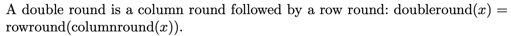

The doubleround function
Inputs and Outputs
To quote Bernstein: If x is a 16-word sequence then doubleround(x) is a 16-word sequence. So, its Haskell type is given as:
doubleround :: Hex (W 32) -> Hex (W 32)
Definition
The doubleround function from page 4 of Bernstein's Salsa20 Specification is given as:

Rendering in ReWire/Haskell
doubleround :: Hex (W 32) -> Hex (W 32)
doubleround = rowround . columnround
Examples

alltests :: [Bool]
alltests = [test1 , test2]
test1 , test2 :: Bool
test1 = doubleround i1 == o1
test2 = doubleround i2 == o2
i1 , o1 , i2 , o2 :: Hex (W 32)
i1 = x16
0x00000001 0x00000000 0x00000000 0x00000000
0x00000000 0x00000000 0x00000000 0x00000000
0x00000000 0x00000000 0x00000000 0x00000000
0x00000000 0x00000000 0x00000000 0x00000000
o1 = x16
0x8186a22d 0x0040a284 0x82479210 0x06929051
0x08000090 0x02402200 0x00004000 0x00800000
0x00010200 0x20400000 0x08008104 0x00000000
0x20500000 0xa0000040 0x0008180a 0x612a8020
i2 = x16
0xde501066 0x6f9eb8f7 0xe4fbbd9b 0x454e3f57
0xb75540d3 0x43e93a4c 0x3a6f2aa0 0x726d6b36
0x9243f484 0x9145d1e8 0x4fa9d247 0xdc8dee11
0x054bf545 0x254dd653 0xd9421b6d 0x67b276c1
o2 = x16
0xccaaf672 0x23d960f7 0x9153e63a 0xcd9a60d0
0x50440492 0xf07cad19 0xae344aa0 0xdf4cfdfc
0xca531c29 0x8e7943db 0xac1680cd 0xd503ca00
0xa74b2ad6 0xbc331c5c 0x1dda24c7 0xee928277
λ> alltests
[True,True]